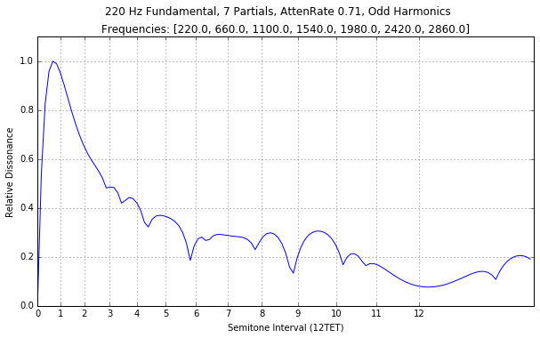
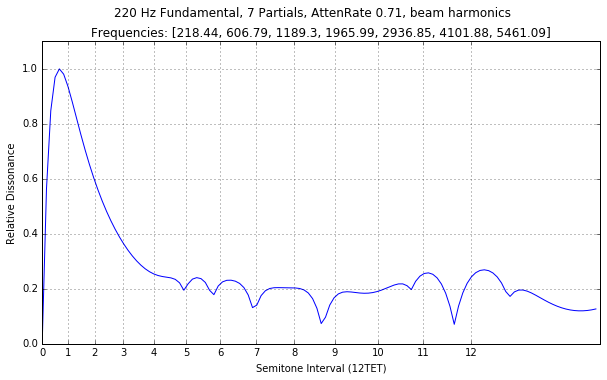
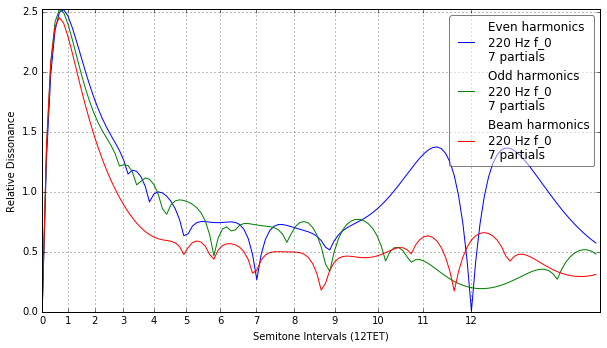
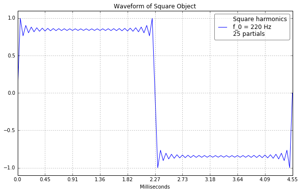
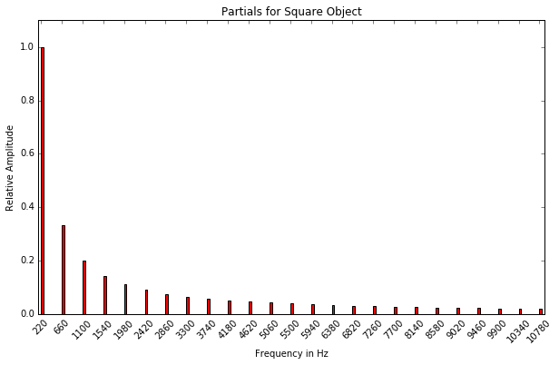
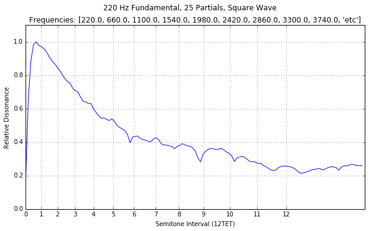

Timbreexplorer
Python code to explore the relationship between musical timbre and dissonance
Timbre Explorer
The Timbre Explorer module creates Timbre objects for the investigation of the dissonance and consonance properties of musical timbres. The disMeasure() function is not mine - it is a Python translation of William Sethares’s matlab and C code. I highly recommend reading his writings on the relationship between tuning and timbre. Try this for starters. I have added functions to do plots of various kinds and to generate .wav files so you can hear the timbres and their dissonance / consonance patterns. Requires Matplotlib, Numpy and Scipy.
import Timbre
import matplotlib.pyplot as plt%matplotlib inline
plt.rcParams['figure.figsize'] = (10, 6)Typical usage, assuming you cd to the directory that contains the Timbre directory and run Python 2.7x from there:
- import Timbre
- foo = Timbre.Even()
- foo.disMeasure(octaves = 1) # perform the dissonance calculation
- foo.disPlot() # plot the dissonance curve for the timbre
- foo.ConsDisFreqs() # plot of the maximima and minima in the dissonance curve
- foo.partialsPlot() # bar plot of the relative amplitudes and frequencies for the partials of the timbre
- foo.wavePlot() # plot one period of the timbre's waveform
- foo.timbreGen() # Generate a 5 second sample of the timbre
- foo.timbreSweep(length = 60) # Generate a sweep of the timbre against itself
Create some Timbre objects. Objects can be initialized as:
- Even (even partials)
- Odd (odd partials)
- Evenodd (even and odd partials etc.)
- Square
- Sawtooth
- Triangle
- Beam
- Custom
even = Timbre.Even()
odd = Timbre.Odd()
beam = Timbre.Beam()Timbre successfully initialized with parameters of 220Hz, 7 partials, attenuation factor of 0.71
Timbre successfully initialized with parameters of 220Hz, 7 partials, attenuation factor of 0.71
Timbre successfully initialized with Beam partials
Make some plots:
even.disPlot()
Note the flat third (interval 4)
odd.disPlot()
beam.disPlot()
Note the stetched partials of the vibrating beam timbre, especially the sixth and octave
Timbre.disPlotMultiple(even, odd, beam)
square = Timbre.Square(n_partials = 25)Timbre successfully initialized with parameters of 220Hz, 25 partials
square.wavePlot()
square.partialsPlot()
square.disMeasure()
square.disPlot()